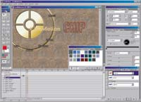
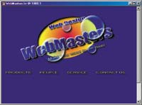
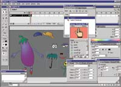
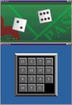

Чародеи Web
Компьютерный журнал "Chip"
Еще полгода назад для создания анимированных Web-страниц повсеместно
применялся редактор Flash от Macromedia. Однако с выпуском Adobe LiveMotion 1.0
у безусловного лидера появилась весомая альтернатива
Статические страницы уже давно перестали удивлять посетителей Internet своей
оригинальностью. Чтобы привлечь к Web-сайту внимание сегодняшнего серфера, нужны
красивые переливающиеся и подвижные картинки, интерактивные меню, звуковые и
другие специальные эффекты.
Примитивные функции мультипликации в Web изначально возлагались на
анимированный GIF-формат, не позволяющий, однако, создавать плавно перетекающие,
перекрывающие друг друга, становящиеся прозрачными графические изображения.
Реализация последних, кроме наглядности, освобождает на страницах место для
других элементов.
Привычные графические форматы, такие, например, как TIFF или JPEG, можно
обрабатывать с помощью даже самых простых графических редакторов. Для создания
же и обработки плавной Web-мультипликации до настоящего времени применялась
одна-единственная программа - Flash от компании Macromedia. Несмотря на
изначально небогатый набор поддерживаемых ею инструментов, ее гибкий файловый
формат быстро распространился в Internet.
Не последнюю роль в этом сыграло и бесплатное распространение подключаемых
элементов (plug-ins) для воспроизведения анимации Web-браузером. Как известно,
где успех, там и подражатели. Компания Adobe, имеющая колоссальный опыт в
производстве высокопрофессиональных графических пакетов, взвесила все "за" и
"против" и приступила к работе.
И результат превзошел все ожидания - ее LiveMotion 1.0 стала первой
программой, составившей явную конкуренцию Flash. Однако Macromedia быстро
ответила на этот удар контрударом: совсем недавно на рынке появилась Flash 5,
основной задачей которой стало привлечь к себе внимание даже тех пользователей,
которые, возможно, уже опробовали или перешли на LiveMotion 1.0.
Согласно мнению Adobe, LiveMotion 1.0 якобы не призвана быть лучшим или
худшим клоном своего "старшего брата". Это касается и поддержки Flash-файлов -
формат, стандартизированный Macromedia для Web-анимации (имеющий расширение SWF)
в LiveMotion сосуществует с другими графическими форматами и никоим образом не
является основным.
Со стороны создается впечатление, что оба создателя программ-аниматоров
стараются представить ситуацию так, как будто сравнение их продуктов можно
вообще поставить под сомнение. Adobe позиционирует свой продукт для начинающих
пользователей, предоставляя все средства для быстрого освоения и удобной работы,
в то время как пользователями Flash, в основном, являются профессионалы, которые
работают с простыми инструментами достаточно редко.
Однако действительно ли оба пакета настолько отличаются друг от друга, как
это хотят представить их производители? К примеру, нельзя утверждать, что Adobe
не пытается переманить на свою сторону дизайнеров, работающих с Flash, - для
владельцев продуктов Adobe, а также некоторых продуктов Macromedia у компании на
LiveMotion специальная цена - $99, что втрое меньше ее обычной стоимости.
Обзор LiveMotion 1.0 и Flash 5, представленный на следующих страницах,
показывает, что оба "дуэлянта" походят друг на друга гораздо больше, чем им
этого хотелось бы, вплоть до совместимости: как Flash, так и LiveMotion
отказываются открывать "чужие" рабочие проекты.
Обработал Юрий Эйсмонт
Для пользователя, знакомого с основными возможностями Adobe Photoshop, быстро
освоиться с главными функциями LiveMotion 1.0 не составит труда. К примеру, в
палитре стилей можно найти привычные эффекты -притупленные кромки, тени,
градиенты, легко перетаскиваемые мышкой из меню на отдельный объект.
Векторную графику можно создавать не только с помощью встроенных средств
палитры инструментов, но и импортировать из распространенного векторного
EPS-формата. Кроме того, LiveMotion 1.0 поддерживает все популярные растровые
(bitmap) форматы.
 |
|
Сильные стороны LiveMotion 1.0 - простые и наглядные меню, а также
хорошо структурированная временная шкала
|
Программа прекрасно совместима с другими основными продуктами от Adobe -
Photoshop и Illustrator. Это проявляется, например, в наличии средств импорта
многослойных рабочих файлов этих пакетов (PSD и AI), при этом помещаемые уровни
могут преобразовываться не только в слои объектов, а и в последовательности
кадров для анимации (keyframes), а также в серии независимых объектов. Команда
Edit Original позволит внести необходимые изменения в изображения, используя
непосредственно Illustrator или Photoshop, причем модификации будут немедленно
отражены в общей композиции LiveMotion.
По окончании работы над статическим проектом LiveMotion позволит представить
результат в растровых графических форматах либо экспортировать весь документ как
Web-страницу непосредственно в формат HTML/JavaScript. Динамические сцены можно
сохранить как во Flash-формате (SWF), так и в качестве анимированных GIF-файлов.
Удобным и мощным является инструмент Batch Replace HTML, позволяющий
автоматически форматировать текст любого HTML-документа, преобразуя его в
графику. Для этого сначала нужно создать набор шаблонов для заголовков и ссылок,
комбинируя инструмент Text с графикой, а затем выбрать нужную гипертекстовую
страницу и выполнить преобразование. В результате из подзаголовков документа
получится графика, а из текстовых ссылок - переключатели перемещения. Проще не
бывает.
Вернемся к основному предназначению программы - созданию плавной анимации.
Здесь центральным элементом является временная шкала (Timeline),
позаимствованная у программы обработки видеоэффектов Adobe After Effects.
 |
|
Вдохновленный красочными примерами LiveMotion 1.0, начинающий
Web-аниматор сможет быстро достичь отличных результатов
|
Создание любого объекта на рабочей поверхности LiveMotion 1.0 влечет за собой
появление в этой шкале как основной записи о нем, так и дополнительных дорожек
для каждого его свойства (положение, величина, вращение, цвета, градиенты,
прозрачность, эффекты). Таким образом можно контролировать временное поведение
каждого объекта и его свойств по отдельности.
Для того чтобы "оживить" надпись, фигуру или картинку, достаточно просто
активизировать соответствующую ей запись временной шкалы, перенести объект на
новое место, а затем задать на шкале конечную временную точку. Раскадровку
перехода между заданными позициями LiveMotion выполнит автоматически. Обычно
программа старается создать плавный переход, однако возможны и другие методы
интерполяции - например, пружинящее движение, как у скачущего резинового мяча.
В отличие от кадрозависимой временной шкалы (frame-based), используемой в
Macromedia Flash, LiveMotion имеет времязависимую шкалу (time-based). Это
означает, что изменение частоты кадров (количества изображений в секунду)
вызывает автоматическое согласование кадров анимации. Такая оптимизация играет
важную роль, поскольку благодаря ей анимация не будет "хромать" даже в
Web-браузере медленного ПК.
Скорость загрузки как статических, так и динамических Web-страниц во многом
определяется объемом используемых графических файлов. Adobe уделила большое
внимание этому вопросу, предложив в LiveMotion т. н. "пообъектное" сжатие
данных. При экспорте во Flash-формат этот метод позволяет отдельно для каждого
растрового изображения задать файловый формат (GIF, JPEG или PNG), то есть
определить его качество. Причем в окне предварительного просмотра экспорта сразу
же можно увидеть примерный результат и конечный объем файла.
Кроме того, если одни и те же рисунки и звуки в композиции используются
несколько раз, алгоритм AutoSymbols оптимизирует результирующий SWF-файл,
располагая в нем только уникальные ресурсы.
Компания Macromedia, также, как и Adobe, осознала необходимость использования
своих наработок в других графических продуктах, поэтому пятая версия Flash
обладает развитыми средствами интеграции с Macromedia Freehand, Fireworks и
Generator. Более того, следствием концепции максимальной унификации интерфейсов
продуктов Macromedia стало появление удобной панели запуска важнейших модулей
(Launcher Bar), давно известной мастерам Macromedia Dreamweaver (см. ЧИП 1/2001,
с. 52).
Заметен результат усилий разработчиков по упрощению интерфейса Flash:
многочисленные вложенные меню заменены на "плавающие", с удобными закладками,
похожие на те, что используются в LiveMotion. Приятно и значительное улучшение
"хромавшего" в предыдущих версиях руководства пользователя, а также появления
интерактивного учебника.
В пятой версии Flash введен привычный по другим популярным графическим
программам инструмент для работы с кривыми Безье Pen, позволяющий дизайнеру
создавать точнейшую векторную графику. Его работа отныне будет единой во всех
программах Macromedia. Новинкой также стал Pencil, различные режимы работы
которого (Straighten - для представления линий в виде наборов участков
геометрических фигур, Smooth - для сглаживания, Ink - для минимального
затушевания без существенных изменений формы линий) позволяют добиться любого
требуемого результата при рисовании "от руки".
 |
|
Flash 5: cочетание четкости и гибкости векторной графики с растром,
звуком, анимацией и богатой интерактивностью
|
Отсутствие фильтров и стилей Flash пытается возместить такими инструментами,
как лассо, волшебная палочка и резинка. В то же время, несмотря на возможность
экспорта анимации в формат Apple QuickTime, качество фильмов все равно остается
недостаточно высоким.
Невзирая на наличие широких возможностей для создания анимации, дорога к ней
во Flash по-прежнему усеяна камнями. Так, например, временная шкала, как и
ранее, слишком сложна в обращении. Свойства объектов нельзя регулировать по
отдельности. Неудобно и то, что все параметры объекта содержатся только в
действующем в данный момент кадре. Если, например, нужно быстро изменить цвет
фигуры, приходится вручную переопределять его во всех кадрах.
Напротив, функциональность Flash заметно улучшилась. Появился Movie Explorer
- модуль для навигации по большим проектам, позволяющий управлять группами
объектов сцены (текст, кнопки, изображения, сценарии действий, звуки). Например,
чтобы заменить некоторый шрифт, используемый во всей композиции, достаточно
установить в Movie Explorer фильтр на текстовые объекты, а затем выбрать
подходящую замену в окне Character.
Благодаря использованию библиотек общих объектов (shared symbol libraries)
существенно упрощается совместная работа нескольких человек над одним масштабным
проектом. Теперь при создании крупного Web-ресурса разработчики могут
использовать различные повторяющиеся элементы (например, логотипы компании) и не
заботиться об обновлении этой информации в случае каких-то изменений. Хранение
часто используемых общих данных во внешних файлах позволяет также обеспечить и
меньшее время загрузки проекта.
Несомненно, Flash 5 является мультимедийным. Наличие инструментов для
максимального наполнения страниц интерактивным содержанием было одним из главных
преимуществ и предыдущих версий продукта. Несмотря на это, только в пятой
модификации появились и расширились функции, гарантирующие скорое
распространение в Internet новых игр и даже интерактивных фильмов во
Flash-формате. Создавать элементы сложного взаимодействия с пользователем
помогут такие инструменты, как редактор языка ActionScript и Debugger.
 |
|
Вы еще не видели "онлайновые" версии костей и пятнашек? Не беда.
Несложный язык ActionScript обеспечит скорое появление в Сети множества
Flash-игр |
Чтобы упростить обучение синтаксису нового языка сценариев для описания
поведенческих моделей, ActionScript был существенно расширен и стал во многом
напоминать простой и известный многим пользователям JavaScript. С помощью
функции External Scripts тексты программ, написанных на ActionScript, могут быть
экспортированы в ASCII-файлы для изменений во внешнем редакторе, а затем
помещены обратно во Flash. Кроме того, наличие инструмента Debugger (отладчик)
позволит, например, отключать некоторые элементы при тестировании всего проекта.
Единственная капля дегтя во всей этой бочке меда: для воспроизведения в
браузере пользователя сцен, созданных с помощью новых функций ActionScript,
нужен и новый Flash-плейер. Однако, как утверждает Macromedia, по крайней мере
несколько новых script-функций должны работать со старой версией
Flash-проигрывателя.
Дальнейшее увеличение популярности Flash 5 обеспечил инструмент Smart Clips.
Речь идет об эффективной и быстрой возможности создавать и оформлять различные
элементы перемещения по Web-ресурсам. Благодаря использованию наборов элементов
с переменными параметрами существенно упрощено создание сложных интерактивных
операций, таких как линейки навигации и всплывающие меню.
Используя язык XML для информационного наполнения (работы с базами данных) и
программу Flash для красочного и простого пользовательского интерфейса,
разработчики смогут создавать полноценные интерактивные приложения электронной
коммерции.
Можно считать, что компания Adobe выполнила свою основную задачу: кто-то
должен был дать отпор квазимонополии Macromedia Flash. Сложившуюся ситуацию
можно считать только началом битвы за создание еще более понятных, удобных и
высокопрофессиональных программ для Web-анимации, в которой в скором будущем
примут участие и другие компании.
В целом, для тех, кто хочет быстро научиться обращать свои невероятные идеи в
красивую Web-графику и имеет опыт работы с Photoshop или Illustrator, идеальным
решением будет освоение Adobe LiveMotion 1.0, а не возня с "классиком жанра" от
Macromedia. LiveMotion прекрасно подходит для создания небольших анимаций,
демонстрационных роликов, анимированных GIF- и Flash-баннеров, интерактивных
меню и карт ссылок с rollover-эффектами.
Профессиональному пользователю, уже имевшему дело с Flash, ее новая версия,
несомненно, придется по душе. Многое стало проще, возросла производительность,
открылись новые возможности. Однако даже если человек никогда с программой не
работал, но планирует конструировать крупномасштабные композиции или работать в
составе группы разработчиков Flash-сайтов, он найдет во Flash 5 все самое
необходимое. Продукт лидирует в области HTML-экспорта, обладает
полнофункциональным набором инструментов и благодаря Movie Explorer имеет
широкие возможности администрирования больших проектов.
Но прежде чем окончательно определиться, запомните, что обратной дороги нет -
как Flash не понимает рабочие LIV-файлы LiveMotion, так и наоборот. Здесь уж
конкуренция взяла верх над совместимостью.